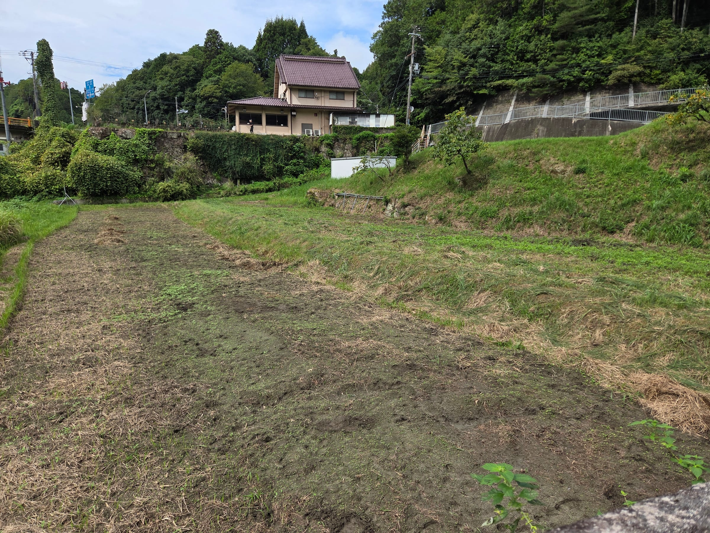

EXPERIENCE-BASED LEARNING
学生と創る、
あなたとの一年と、この一皿。
若年層の獲得と耕作放棄地活用のための体験型学習プロジェクト。奈良県内の使われていない農地を借り、田植えから収穫、食事までを一本の物語として設計しています。2026年度 奈良市 産学官連携プラットフォーム 補助金の採択事業です。

私たちが直面する
農業のリアルな課題。
全国で極めて低い水準
36 位 全国都道府県中
人口100人当たりわずか 1.43 人
奈良県の農業従事者は全国的にみてもかなり低い水準にあります。若年層の新規就農者が少なく、今後の農業基盤の維持には早急な増加が強く望まれています。
出典: 農林水産省, e-Stat, 農業構造動態調査 (2016)
小規模な農地と休耕地の増加
42 位 全国都道府県中
販売農家1戸当たりわずか 0.94 ha
耕作地面積も全国42位と非常に小さく、滋賀や京都などの近隣県と比較しても低い水準です。土地が細分化されており、担い手不足による耕作放棄地の増加が深刻化しています。
出典: 奈良県, 第一編 データの分析編 (2020)
日々の生活から聞こえる、課題を身近に感じる声
私の友人（19歳）
若年層の認識「奈良県の有名な農作物って言われても、何かあんまり思い浮かばないし、そもそも普段意識したことないかもな…」
近所のご年配の方
農地の現状「近くの畑、自分も高齢になってきて、もう長いこと使ってないんよ。でも誰も継いでくれんから、荒れ放題になっとるんや…」
若年層を代表とする、これからの「農業従事者」を集め、耕作放棄地を活用する仕組みが必要です。
農作物の生まれから終わりまで全てを知る、
「体験型学習」の仕組み。
Conventional ／ 従来のサイクル
生産と消費の分断
食べる人は、自分が食べる野菜が「誰に、どうやって育てられたか」を知ることができず、単なる「商品」として消費します。
田植え・苗植え
農家さんだけで行う栽培の開始
収穫
機械化または人手不足の中での回収
小売店
スーパーなどに並ぶ無機質な野菜
消費
食卓での消費（生産背景は一切見えない）
LinkFarm Cycle ／ テックで繋がる新たな関係
プロセスそのものを楽しむ
植えるところから、テックの力を借りた成長の追体験、自分の手での収穫、保持する愛着、そして最後にみんなで食べる喜びまで、一連の物語を体験します。
田植え・苗植え現地体験
自分の手で土を触り、苗を植える感動の第一歩
成長のフィードバックTech機能
オンラインで成長日記、画像配信、NFTなどで苗の「今」を知る
自ら収穫現地体験
大きくなった作物を、再び現地に足を運んで自分の手で収穫
食事で消費食事イベント
収穫したての野菜で料理を作り、仲間と共に味わう最高の瞬間
農業人口減少の解決に向けて
若年層に「楽しさ」や「関心」を届けることで、持続可能で自然な就農希望者の増加サイクルを目指します。
耕作放棄地の利活用
使われていない農地を「体験型イベント」のフィールドとして再定義し、新しい需要と価値を創出します。
心理的距離を常に近く保ち続けるテック機能。
「植えて終わり」にしない。デジタル技術を活用して、離れていても自分の作物の成長をリアルタイムに感じられる仕組みを導入します。
成長段階の定期配信
動画配信・画像配信農園に設置したカメラから、定期的に成長の様子を動画や写真で発信。視覚的アプローチによって、農作物の成長を生き生きと感じられます。
作物のデータ取得・送信
農家日誌・コラム発信現地農家さんの日々の管理データや裏話コラムを配信。定期的に届くニュースレターを通じて、まるで自分の庭のように親近感が高まります。
作物データのNFT化
唯一無二のデジタル証明自分が育てた作物の品種や成長ログをブロックチェーン上に記録しNFT化。この世界に1つだけの愛着を、デジタルな「持ち物」として保管できます。
LINEスタンプ作成
日常に寄り添うキャラクター育てた作物の形や個性をもとにした可愛いイラストスタンプを制作。毎日のチャットを通じて、プロジェクト体験が日常に溶け込みます。
本年の活動スケジュール。
準備期間から作物の成長、収穫イベント、さらには座学まで、1年間を通じた体験プログラムの流れをご紹介します。
-
7月 — 9月
準備・協賛募集
体験型学習プログラムの開始に向けて、フィールドとなる耕作放棄地の整備、機材の調達、そして協賛パートナーの募集を行います。最初の基盤を作る大切な準備期間です。
-
9月 — 翌年2月
田植え・苗植え & 成長配信
いよいよ農作業の開始！現地に集まって田植えや野菜の苗植えを実施します。その後はテック機能をフル活用し、離れた場所からでもスマホを通して作物の成長を日々見守ります。
-
10月頃 —
奈良の農業講座
単に育てるだけでなく、農業の歴史や奈良県独自の農作物の魅力、さらには持続可能なスマート農業技術を座学形式で学ぶ講座を開催します。
-
翌年2月
収穫 & 食事イベント
ついに迎える実りの秋・冬の収穫！自分たちで育て上げた野菜を収穫し、その場や食事会でみんなで調理して味わいます。自分で育てたからこその、唯一無二の美味しさを仲間と分かち合います。
この事業に、参加・協賛しませんか？
奈良の豊かな大自然と、現代のテクノロジー。これらを掛け合わせることで、若者が集まり、耕作放棄地が再び息を吹き返す。そんなワクワクする未来を、私たちと一緒に作りましょう。